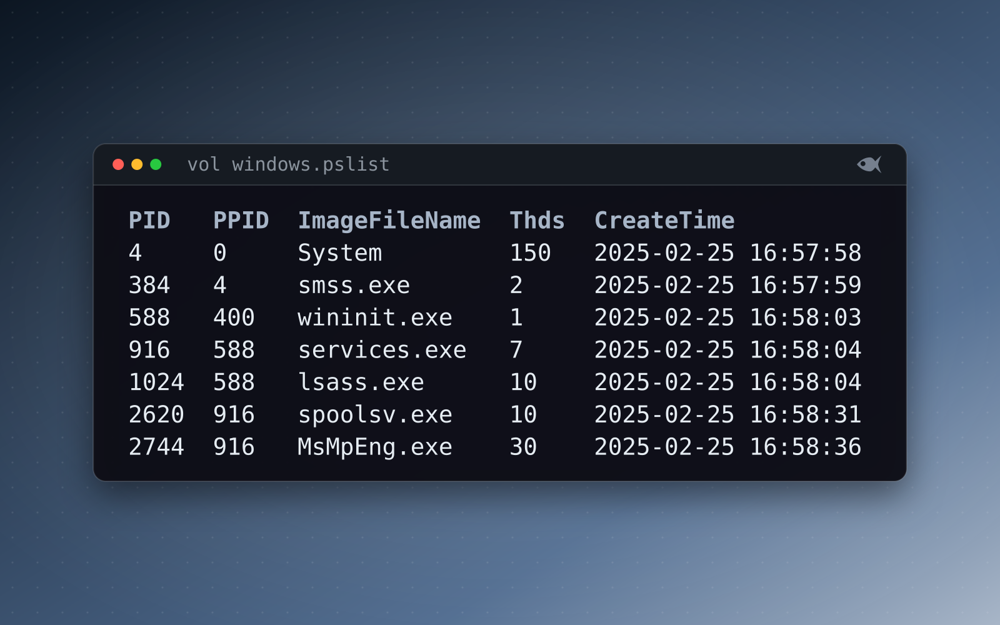

Getting started with memory forensics in Volatility 3
A memory image shows you things a disk never will: running processes, network connections, command lines, and injected code, all frozen at the moment of capture. Volatility 3 is the standard free tool for reading one, and unlike version 2 it works out the symbols on its own.

Get Volatility 3
Volatility 3 is free, open source, and written in Python. Install it with pip install volatility3, or clone it from the project repo. The main change from version 2 is that you no longer pass --profile; version 3 figures out the symbols itself. On the first run against a Windows image it downloads the matching kernel symbols from Microsoft's symbol server, so it needs internet once; after that it works offline.
Start with the processes
A memory case usually starts with what was running:
vol -f memory.dmp windows.pslist: the active process list.vol -f memory.dmp windows.pstree: the same list as a parent/child tree, so an odd pairing like a browser launching a shell stands out.vol -f memory.dmp windows.psscan: scans for processes, including hidden or exited ones.
Our memory cases ship a real image you can run these against.
$ vol -f memory.dmp windows.pslist
Volatility 3 Framework 2.28.2
PID PPID ImageFileName Offset(V) Threads Handles SessionId Wow64 CreateTime ExitTime File output
116 4 Registry 0xcf5d1d454060 4 - N/A False 2025-02-25 16:57:56.000000 UTC N/A Disabled
4 0 System 0xcf5d1d455060 150 - N/A False 2025-02-25 16:57:58.000000 UTC N/A Disabled
384 4 smss.exe 0xcf5d1d456060 2 - N/A False 2025-02-25 16:57:59.000000 UTC N/A Disabled
492 400 csrss.exe 0xcf5d1d457060 12 - 0 False 2025-02-25 16:58:02.000000 UTC N/A Disabled
588 400 wininit.exe 0xcf5d1d458060 1 - 0 False 2025-02-25 16:58:03.000000 UTC N/A Disabled
708 404 csrss.exe 0xcf5d1d459060 14 - 1 False 2025-02-25 16:58:03.000000 UTC N/A Disabled
844 404 winlogon.exe 0xcf5d1d45a060 3 - 1 False 2025-02-25 16:58:03.000000 UTC N/A Disabled
916 588 services.exe 0xcf5d1d45c060 7 - 0 False 2025-02-25 16:58:04.000000 UTC N/A Disabled
1024 588 lsass.exe 0xcf5d1d45d060 10 - 0 False 2025-02-25 16:58:04.000000 UTC N/A Disabled
...windows.pslist on the First Look: What's in Memory image, first rows only. PPID is the parent's PID, SessionId 0 is services and 1 is the logged-on user, and CreateTime is UTC.$ vol -f memory.dmp windows.pstree
Volatility 3 Framework 2.28.2
PID PPID ImageFileName Offset(V) Threads Handles SessionId Wow64 CreateTime ExitTime Audit Cmd Path
4 0 System 0xcf5d1d455060 150 - N/A False 2025-02-25 16:57:58.000000 UTC N/A - - -
* 384 4 smss.exe 0xcf5d1d456060 2 - N/A False 2025-02-25 16:57:59.000000 UTC N/A \Device\HarddiskVolume3\Windows\System32\smss.exe \SystemRoot\System32\smss.exe C:\Windows\System32\smss.exe
* 1220 4 MemCompression 0xcf5d1d46b060 32 - N/A False 2025-02-25 16:58:13.000000 UTC N/A - - -
* 116 4 Registry 0xcf5d1d454060 4 - N/A False 2025-02-25 16:57:56.000000 UTC N/A - - -
...
588 400 wininit.exe 0xcf5d1d458060 1 - 0 False 2025-02-25 16:58:03.000000 UTC N/A \Device\HarddiskVolume3\Windows\System32\wininit.exe wininit.exe C:\Windows\System32\wininit.exe
* 1024 588 lsass.exe 0xcf5d1d45d060 10 - 0 False 2025-02-25 16:58:04.000000 UTC N/A \Device\HarddiskVolume3\Windows\System32\lsass.exe C:\Windows\system32\lsass.exe C:\Windows\System32\lsass.exe
* 916 588 services.exe 0xcf5d1d45c060 7 - 0 False 2025-02-25 16:58:04.000000 UTC N/A \Device\HarddiskVolume3\Windows\System32\services.exe C:\Windows\system32\services.exe C:\Windows\System32\services.exe
** 2404 916 svchost.exe 0xcf5d1d470060 9 - 0 False 2025-02-25 16:58:18.000000 UTC N/A \Device\HarddiskVolume3\Windows\system32\svchost.exe C:\Windows\system32\svchost.exe -k netsvcs -p -s LanmanServer C:\Windows\system32\svchost.exe
** 1620 916 svchost.exe 0xcf5d1d466060 10 - 0 False 2025-02-25 16:58:08.000000 UTC N/A \Device\HarddiskVolume3\Windows\system32\svchost.exe C:\Windows\system32\svchost.exe -k LocalServiceNetworkRestricted -p -s lmhosts C:\Windows\system32\svchost.exe
...windows.pstree on the same image, trimmed. Each * is one level down: services.exe under wininit.exe, svchost.exe under services.exe. Cmd and Path show how and from where each process started. Look for an image path outside Windows and Program Files, or a parent that doesn't fit the child.Follow a process to the network and its command line
windows.netscan: network connections and listening ports, tied back to a process.windows.cmdline: the exact command line a process was started with.windows.dlllist: the modules a process loaded.
$ vol -f memory.dmp windows.netscan
Volatility 3 Framework 2.28.2
Offset Proto LocalAddr LocalPort ForeignAddr ForeignPort State PID Owner Created
0xcf5d1dd70de0 TCPv4 0.0.0.0 135 0.0.0.0 0 LISTENING 1488 svchost.exe 2025-02-25 16:58:07.000000 UTC
0xcf5d1dd70eb0 TCPv4 0.0.0.0 445 0.0.0.0 0 LISTENING 4 System 2025-02-25 16:58:21.000000 UTC
0xcf5d1dd70f50 TCPv4 0.0.0.0 135 0.0.0.0 0 LISTENING 1488 svchost.exe 2025-02-25 16:58:07.000000 UTC
...
0xcf5d1dd740e0 TCPv4 10.186.8.53 139 0.0.0.0 0 LISTENING 4 System 2025-02-25 16:58:42.000000 UTC
0xcf5d1dd741f0 TCPv4 0.0.0.0 49664 0.0.0.0 0 LISTENING 1024 lsass.exe 2025-02-25 16:58:23.000000 UTC
...
0xcf5d1dd74df0 UDPv4 0.0.0.0 123 * 0 2540 svchost.exe 2025-02-25 16:58:35.000000 UTC
0xcf5d1dd75010 TCPv4 10.186.8.53 53992 193.47.46.125 443 ESTABLISHED 3972 chrome.exe 2025-02-26 19:25:45.000000 UTC
0xcf5d1dd75380 TCPv4 10.186.8.53 57197 192.162.108.90 443 ESTABLISHED 2744 MsMpEng.exe 2025-02-26 19:41:37.000000 UTC
0xcf5d1dd756f0 TCPv4 10.186.8.53 64611 72.4.184.211 443 ESTABLISHED 2744 MsMpEng.exe 2025-02-26 20:09:27.000000 UTC
...windows.netscan on the same image, trimmed. LISTENING rows are the host's own services: RPC on 135, SMB on 445, NetBIOS on 139. For each ESTABLISHED row, ask whether the Owner has a reason to talk to that ForeignAddr and port. chrome.exe and MsMpEng.exe (Defender) on 443 do. Take the PID of any row that doesn't to windows.cmdline and windows.dlllist.Look for injected code
windows.malware.malfind (windows.malfind in older releases) finds memory regions that are both executable and private, which usually means injected or unpacked code. That's often where the payload is.
One common snag
A lot of tutorials online are written for Volatility 2, where commands look like --profile=Win10x64 pslist. Those won't run in version 3. Use the windows.<plugin> form instead.
How it fits a Red Herrings case
Our Windows memory cases ship a crash dump (memory/HOST.dmp) that stock Volatility 3 opens, so these plugins return real answers from a different image for every student. The Linux ones ship a LiME image with its symbol table beside it, so they work offline: vol -s memory/symbols -f memory/HOST.lime linux.pslist. First Look: What's in Memory and First Look: Linux Memory on the pathways page are good starts.
Run the free First Look cases or download the sample lab, or start the 30-day trial with sample cases to try, and generate a per-student case.